Vježba 1 - FontForge
Zadatak rađen u FontForge-u. Zadatak je bio napraviti svoj font.
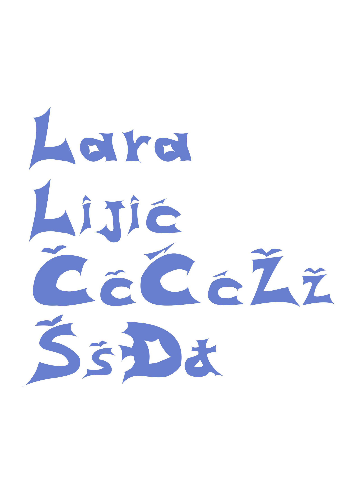Vježba 2 - Adobe Illustrator
Zadatak rađen u Adobe Illustratoru. Zadatak je bio krivuljama napraviti blend i staviti ga na pozadinu svojih inicijala koristeći svoje inicijale rađene u svom fontu.
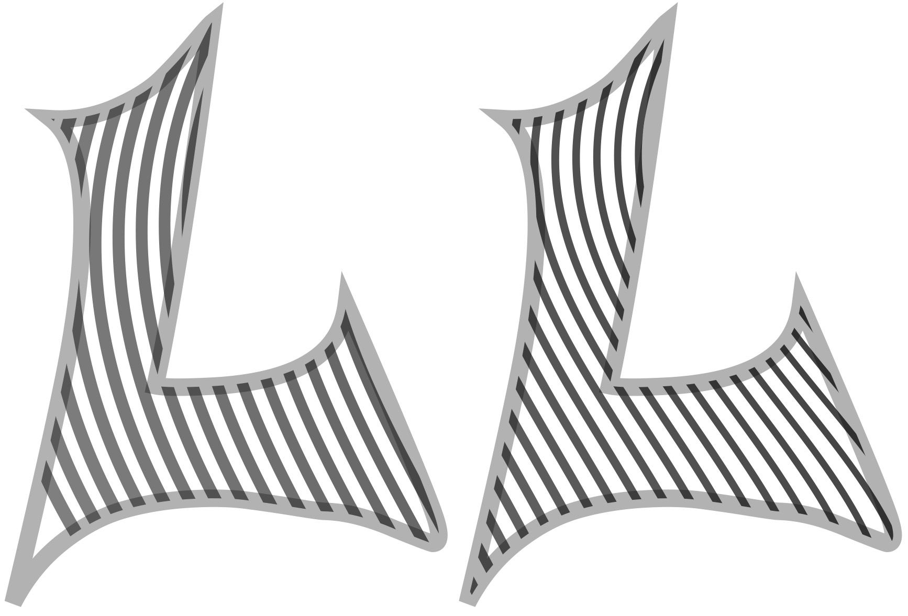Vježba 3
Zadatak rađen u Adobe Illustratoru. Zadatak je bio precrtavanje predloška korištenjem pen tool-a, rotate, transform itd.
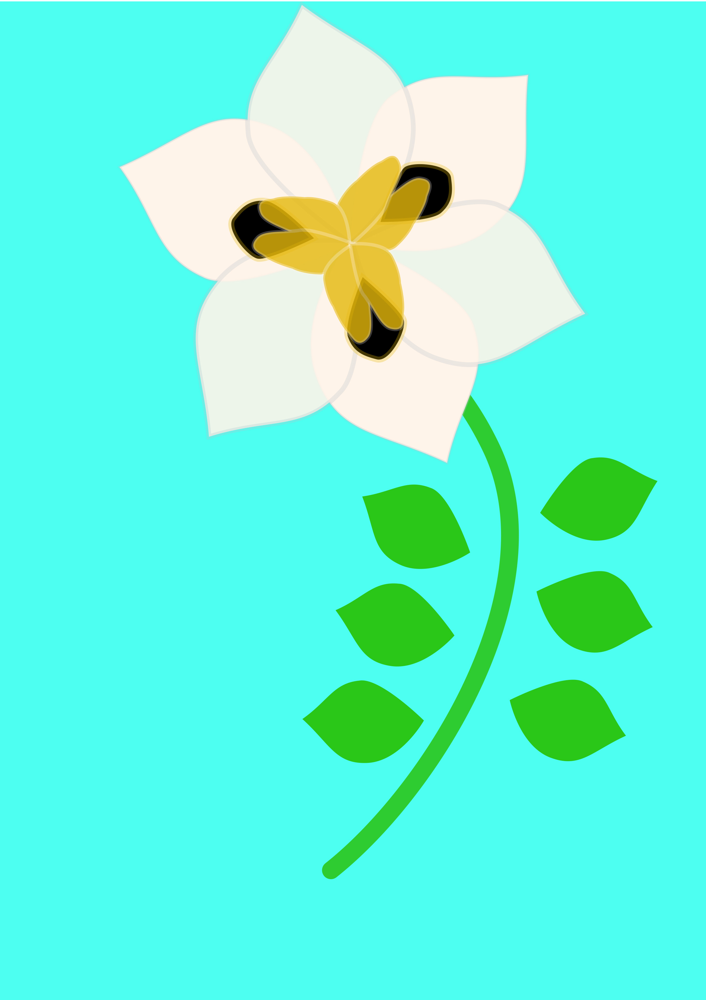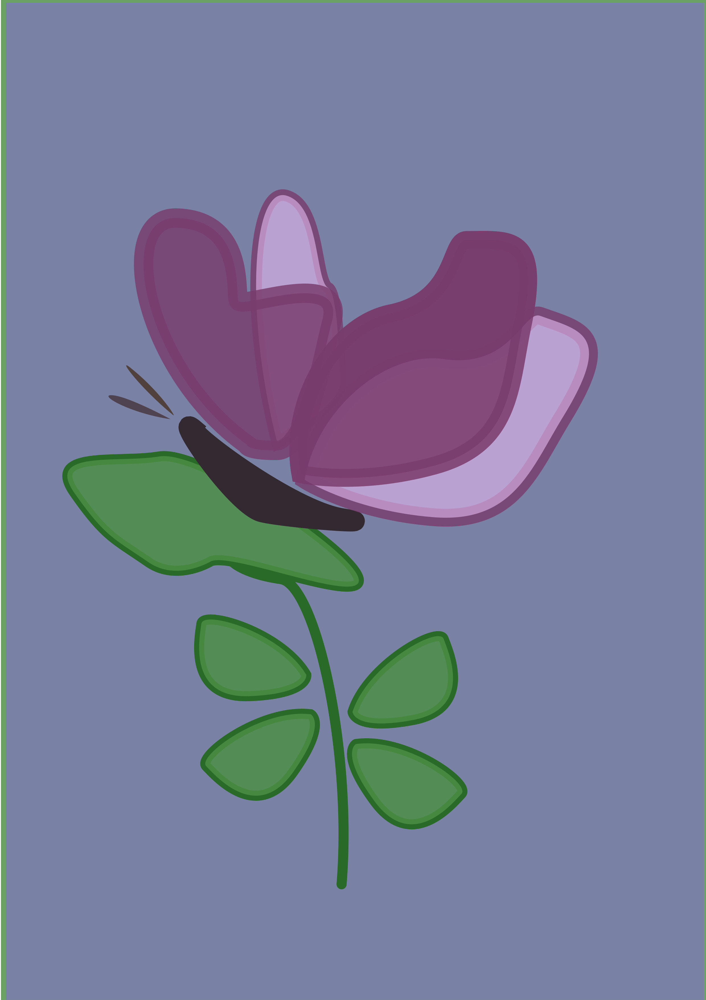
Prvi projektni zadatak
Zadatak rađen u Photoshopu.
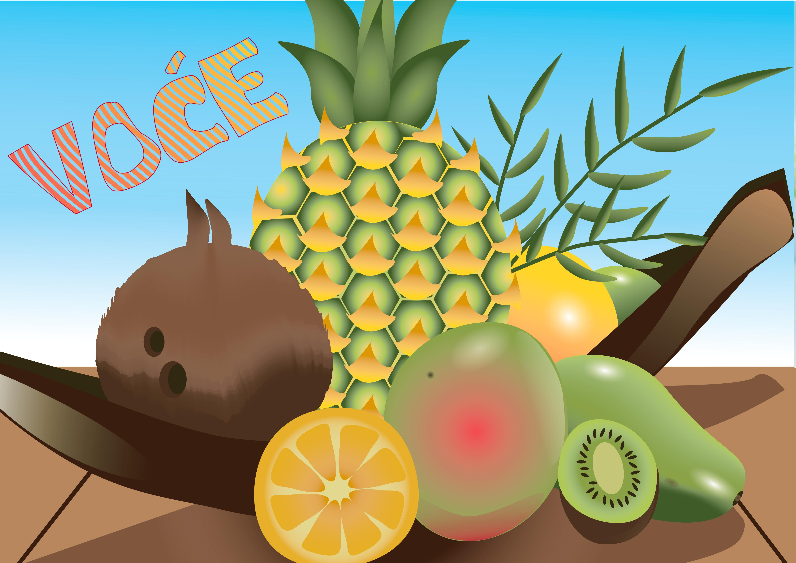Vježba 4 - Adobe Illustrator
Zadatak rađen u Adobe Illustratoru. Korišteni su gradijenti i pen tool.
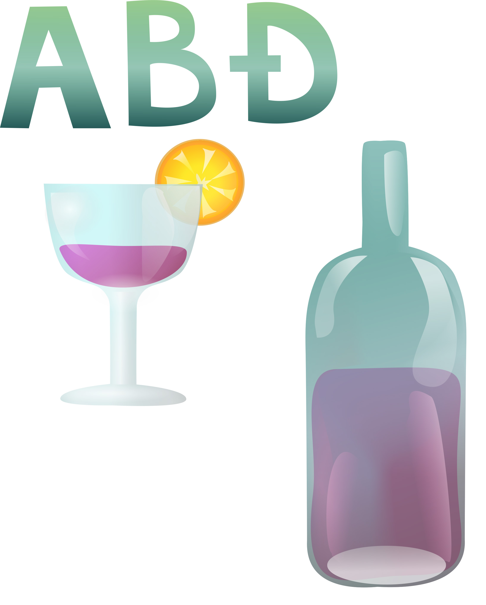Vježba 5 - Retuširanje
Zadatak rađen u Adobe Photoshopu Korišteni alati za Retuširanje kao što su healing tool, stamp i content-aware fill.
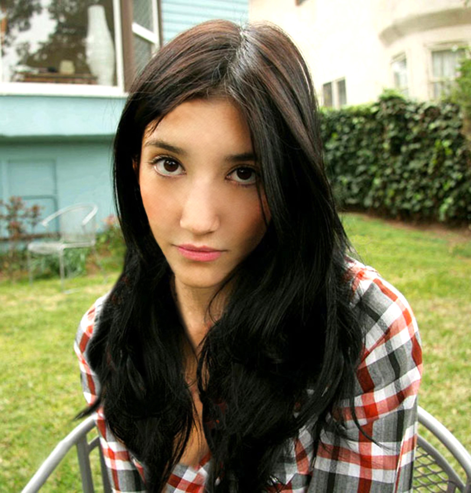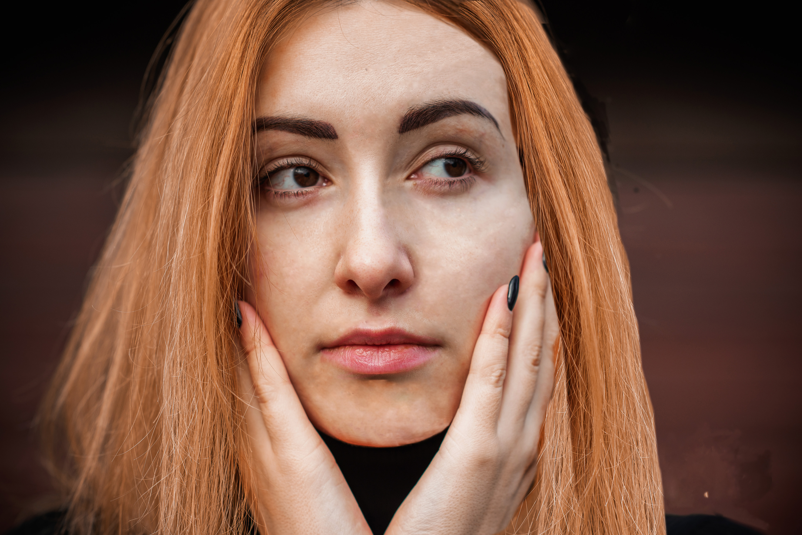
Vježba 6 - Koloriranje
Zadatak rađen u Adobe Photoshopu. Korišteni channels i maske kako bi se kolorirali različiti dijelovi slike.
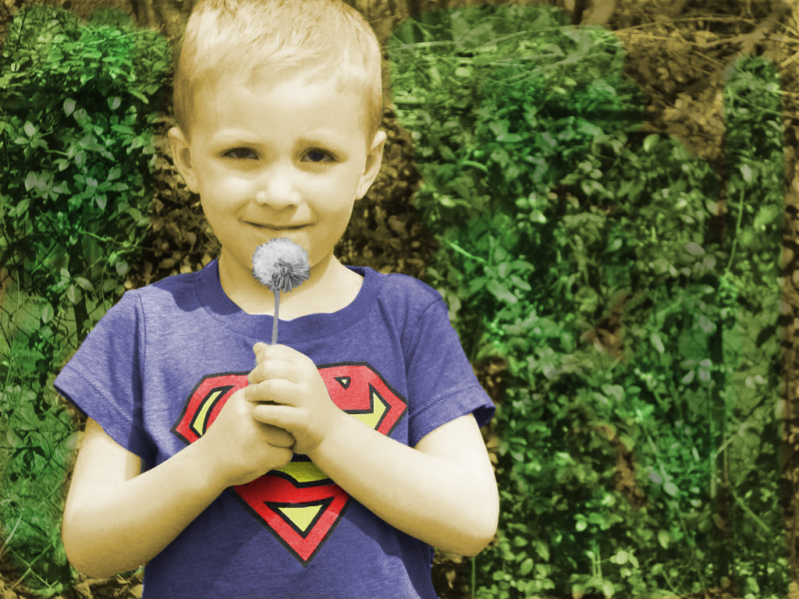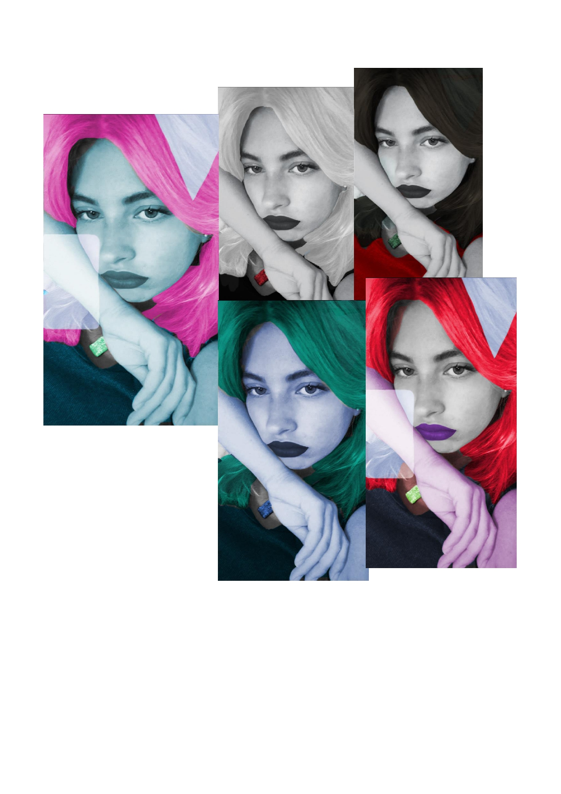
Vježba 7 - Fotomontaža
Zadatak rađen u Adobe Photoshopu. Korišteni su selection, sjene, dodge, burn i slično
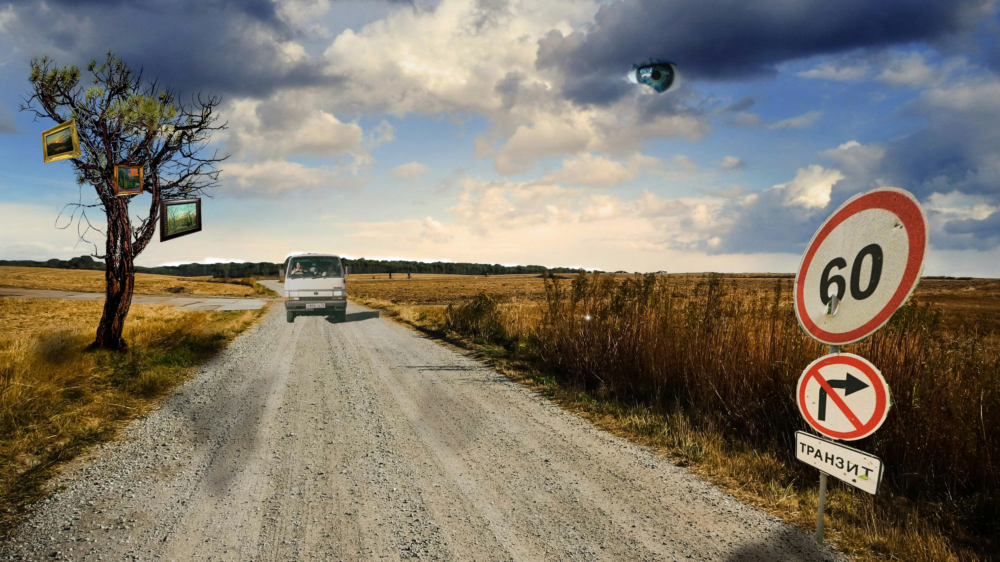Vježba 8 - Cinemagraf
Zadatak rađen u Adobe Photoshopu i Premiere Pro. Video je u Premiere-u isječen do dijele gdje ima kontinuirana radnja, pa je u Photoshop-u napravljena maska kako bi se napravi Cinemagraf.
.gif)
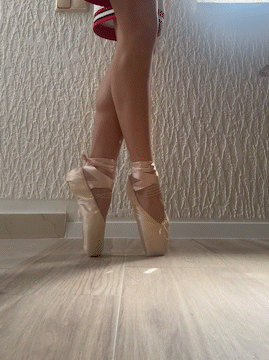
Projektni Zadatak 2
Zadatak rađen u Photoshop-u. Korišteni su svi prethodno naučeni alati kao što su koloriranje, maske, i slično.
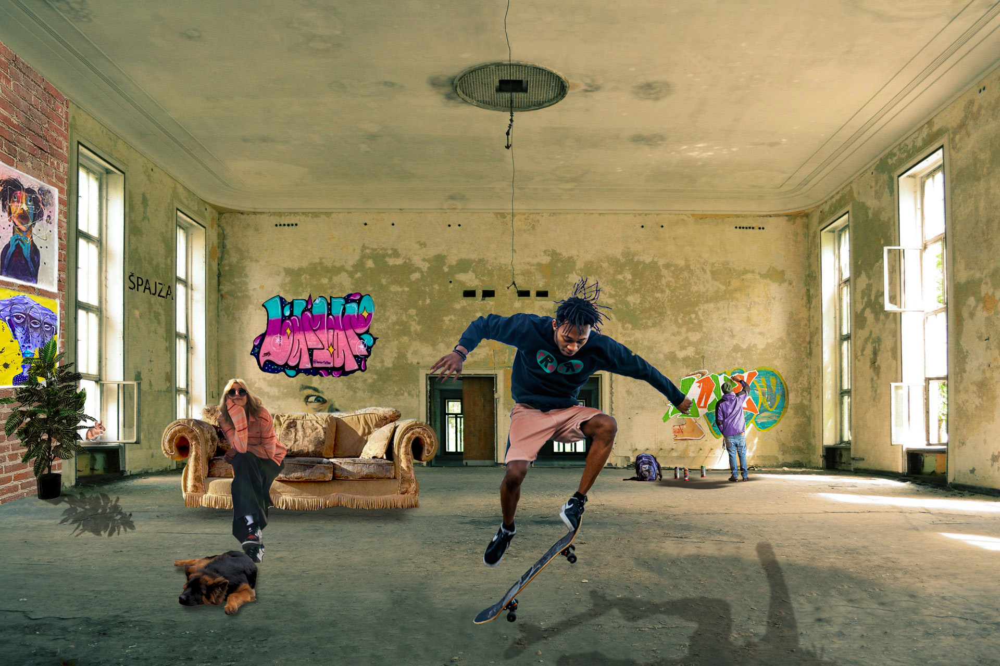Vježba 9
Zadatak rađen u Premieru. Korišteni su alati za brisanje i dodavanje zvuka, dodavanje i obradu teksta te rezanje i spajanje video isječaka.